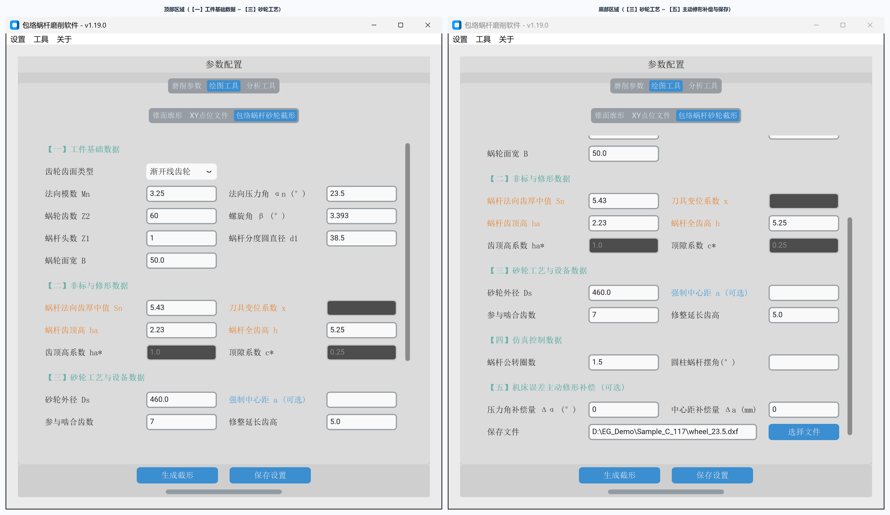
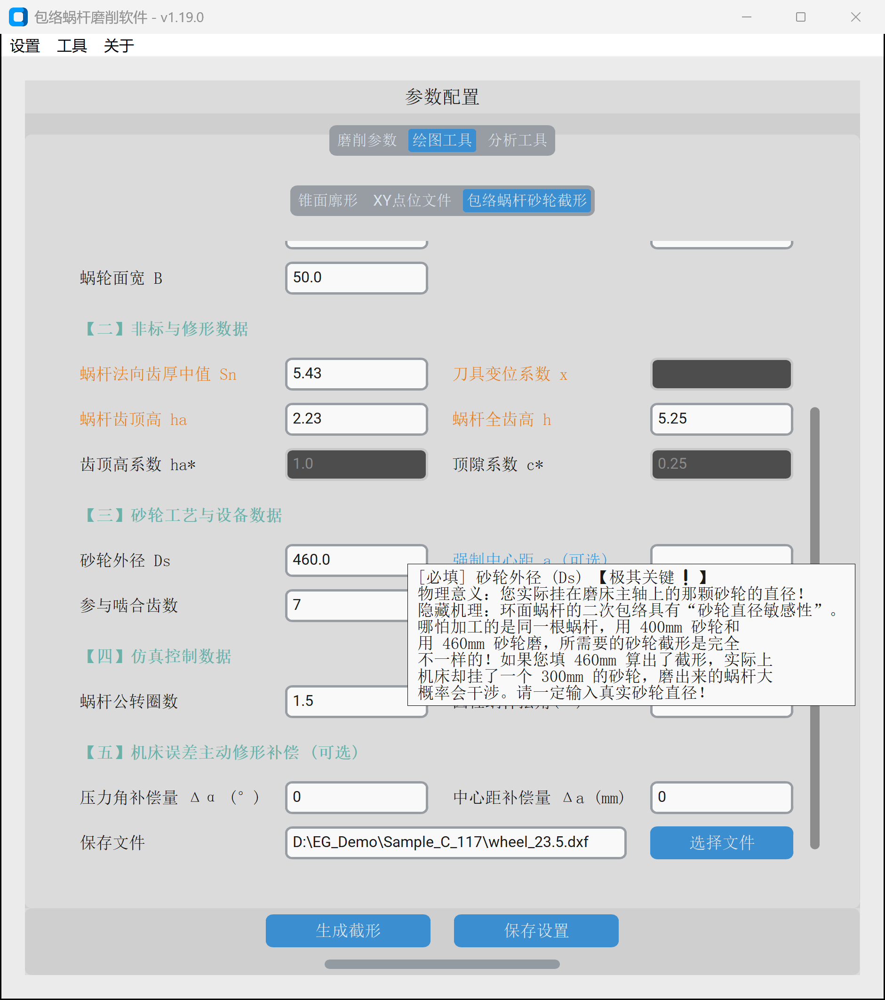
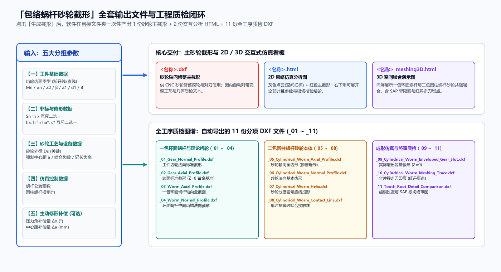
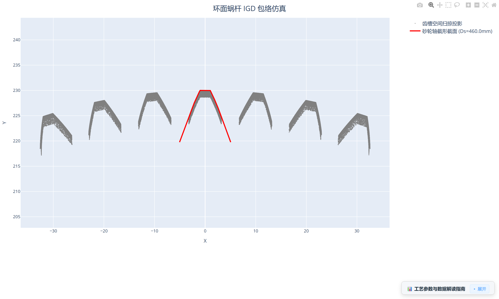

3.3 包络蜗杆砂轮截形
包络蜗杆砂轮截形 是 EnveloGrinding 的核心设计仿真模块。只需输入齿轮与蜗杆设计参数，即可通过空间二次包络微分几何求解：
- 满足当前实际砂轮外径
Ds的精确砂轮修整截形； - 一包环面蜗杆与二包圆柱蜗杆砂轮的 2D/3D 共轭啮合交互看板；
- 面向车削、修整滚轮与三坐标终审质检的 11 份全工序分项 DXF 图纸。

悬停提示功能：将鼠标指针停留在参数名称或输入框上方，右侧立即弹出图文/文字说明卡片，解释该参数的物理意义、推荐取值与隐藏工艺机理（如
砂轮外径 Ds的“砂轮直径敏感性”）。

一、五大分组 22 项参数详解
【一】工件基础数据（8 项）
| 参数名称 | 示例值 (Sample_C_117) |
物理意义与设置要点 |
|---|---|---|
齿轮齿面类型 |
渐开线齿轮 |
可选 渐开线齿轮（标准渐开线齿面）或 直线齿面齿轮（梯形直齿面，压力角恒定）。 |
法向模数 Mn |
3.25 mm |
齿轮/蜗杆基准大小参数，严格按图纸输入。 |
法向压力角 αn (°) |
23.5 ° |
决定齿面陡峭程度；常规为 20°，重载环面蜗杆常用 22.5° / 23.5° / 28.9°。 |
蜗轮齿数 Z2 |
60 |
与蜗杆啮合的配对蜗轮齿数（即虚拟产形刀具齿数）。 |
螺旋角 β (°) |
3.393 ° |
蜗轮分度圆螺旋角（通常等于蜗杆喉部导程角）；直齿（如 Sample_A_110）填 0；软件内部自动用其推导砂轮安装倾角 。 |
蜗杆头数 Z1 |
1 |
蜗杆螺纹头数；与 Z2 共同决定传动比 。 |
蜗杆分度圆直径 d1 |
38.5 mm |
蜗杆喉部（最细处）基准分度圆直径。 |
蜗轮面宽 B |
50.0 mm |
虚拟产形刀具沿轴向参与包络的宽度；建议取中心距的 0.4 ~ 0.6 倍（常用 34 ~ 50 mm），保证包络曲线不断裂即可。 |
【二】非标与修形数据（两对互斥二选一）
软件界面会自动高亮并互斥灰显以下两组参数：
| 互斥组 | 参数 A | 参数 B | 互斥规则与推荐用法 |
|---|---|---|---|
| 齿厚控制组 | 蜗杆法向齿厚中值 Sn（如 5.43） |
刀具变位系数 x（留空） |
输入 Sn 时自动禁用 x，软件逆向反算虚拟刀具变位系数（为使蜗杆齿留厚， 常为负值，属正常现象）；若已知 也可留空 Sn 直接填入 。 |
| 齿深控制组 | 蜗杆齿顶高 ha（2.23）蜗杆全齿高 h（5.25） |
齿顶高系数 ha*（1.0）顶隙系数 c*（0.25） |
填入图纸绝对深度 ha 与 h 后，自动禁用标准系数 ha* / c*；若图纸未标注绝对深度，留空 ha、h 即可按 ha*、c* 乘以模数自动推导。 |
【三】砂轮工艺与设备数据（4 项）
| 参数名称 | 示例值 (Sample_C_117) |
工程作用与工艺分水岭 |
|---|---|---|
砂轮外径 Ds |
460.0 mm |
极其关键：环面蜗杆二次包络对砂轮直径高度敏感，必须按机台实际挂装砂轮外径填写，否则易导致实际磨削干涉。 |
强制中心距 a (可选) |
留空 | 留空时按标准公式 计算；若采用变位中心距，请按图纸强行指定。 |
参与啮合齿数 |
7 |
控制虚拟齿轮同时参与包络的齿数（常用 5 或 7），记录最外侧齿扫掠宽化边界以生成砂轮根部“防干涉倒角”。 |
修整延长齿高 |
5.0 mm |
工艺路线分水岭： • 0.0：保留多齿包络防干涉倒角，机床走标准联动即可防干涉；• > 0（如 5.0）：切掉防干涉倒角沿纯 V 形主直线拉长，砂轮易修整，但加工两端时需额外编入 Z/C 轴修缘减薄动作。 |
【四】仿真控制数据（2 项）
蜗杆公转圈数：默认1.5，控制虚拟刀具沿蜗杆轴向扫掠范围（若点云左右两端未完全包络全齿宽，可增至2.0）。圆柱蜗杆摆角(°)：留空时软件自动按公式 匹配计算普通圆柱蜗杆安装摆角；如需指定特定机床偏摆角，可直接填入度数。
【五】机床误差主动修形补偿 (可选)（2 项）
压力角补偿量 Δα (°)：调控接触斑点上下位置- 输入正值（如
+0.15）：解决蜗杆齿顶干涉，使砂轮根部变胖，把接触斑点向齿根方向推； - 输入负值（如
-0.15）：解决蜗杆齿根干涉，把斑点向齿顶方向移动。
- 输入正值（如
中心距补偿量 Δa (mm)：全齿面鼓形修缘- 输入负值（如
-0.2）：使砂轮整体变胖，在标准中心距磨削时同时修薄蜗杆齿顶与齿根，将边缘扩散斑点收缩聚焦到齿面中心。
- 输入负值（如
二、全套输出文件与 2D / 3D 交互图表

点击 生成截形 后，软件一次产出 1 份砂轮主截形 + 2 份交互 HTML + 11 份质检 DXF：
1. 2D 包络仿真图（<名称>.html）
- 灰色点云：所有参与啮合齿面在砂轮轴截面的空间扫掠投影；
- 红色包络线：最终提取的外圆磨削砂轮轴向截形曲线；
- 右下角折叠卡片：点击
▸ 展开可核对完整基本参数、圆柱蜗杆共轭摆角 、实际磨出槽底直径 与理论根圆偏差、有效渐开线起始直径 及根切评估结论。

2. 3D 空间啮合图（<名称>_meshing3D.html）
默认显示一包环面蜗杆、虚拟产形齿轮与啮合接触线；点击右侧图例 6.1 ~ 6.12 可逐层开关普通圆柱砂轮实体、回转主轴、6.7 实际磨出齿槽截形 (Z=0 端面)、6.8 磨齿走刀接触痕迹（红丹着色斑点） 以及 6.10 SAP 界限圆 / 6.11 理论齿根界限圆 rf。

3. 自动导出的 11 份全工序质检 DXF 清单
| 序号与文件名后缀 | 所属工步 | 核心物理意义与质检用途 |
|---|---|---|
_01_Gear_Normal_Profile.dxf |
一包理论基准 | 工件齿轮单齿法向标准截形，用于法向基本齿条精度比对 |
_02_Gear_Axial_Profile.dxf |
一包理论基准 | 工件端面（Z=0）标准设计截形，齿形质检黄金基准线 |
_03_Worm_Axial_Profile.dxf |
一包环面蜗杆 | 一包环面蜗杆主轴截面上下双侧完整齿廓 |
_04_Worm_Normal_Profile.dxf |
一包环面蜗杆 | 环面蜗杆喉部中间齿槽沿螺旋槽法向截切轮廓 |
_05_Cylindrical_Worm_Axial_Profile.dxf |
二包砂轮本体 | 普通圆柱蜗杆砂轮轴截母线（CNC 金刚石修整滚轮母线） |
_06_Cylindrical_Worm_Normal_Profile.dxf |
二包砂轮本体 | 圆柱蜗杆砂轮沿螺旋槽法向基本梯形截形 |
_07_Cylindrical_Worm_Helix.dxf |
二包砂轮本体 | 砂轮分度圆螺旋线端面投影（校验电子齿轮箱联动比） |
_08_Cylindrical_Worm_Contact_Line.dxf |
二包砂轮本体 | 单时刻（）砂轮与工件瞬时相切接触线投影 |
_09_Cylindrical_Worm_Enveloped_Gear_Slot.dxf |
成形与终审 | 实际包络磨出的 Z=0 端面齿槽实体截形（直接叠加 _02 比对） |
_10_Cylindrical_Worm_Meshing_Trace.dxf |
成形与终审 | 全冲程动态走刀切削印痕（相当于现场红丹着色检验接触斑点） |
_11_Tooth_Root_Detail_Comparison.dxf |
成形与终审 | 同图叠加理论齿廓、实际磨出齿形、SAP 界限圆与理论根圆 |
终审质检两大判读法则（内置于
_11DXF 文本注释中）：
- 根切台阶判定：若实际成形轮廓在进入
SAP 界限圆之前已向内凹陷变细，说明存在严重根切台阶（Undercut）；- 切深与装配干涉判定：实际槽底与理论根圆平齐（偏差
0.00 mm）则切深标准；高于理论根圆说明槽底偏浅，装配时配对齿轮齿顶有撞底顶死风险。